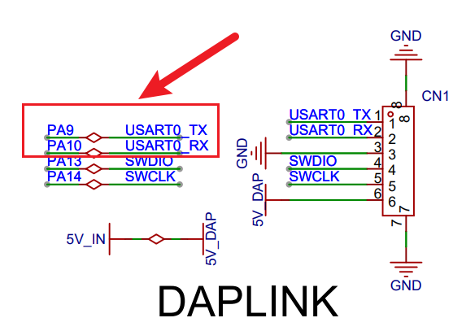
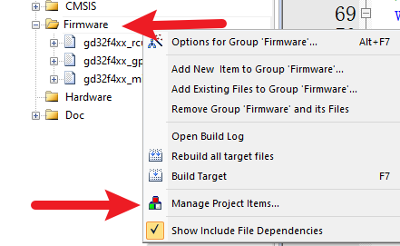
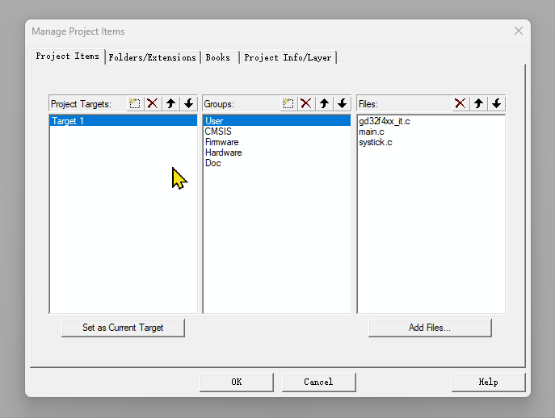
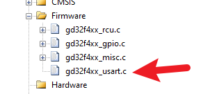
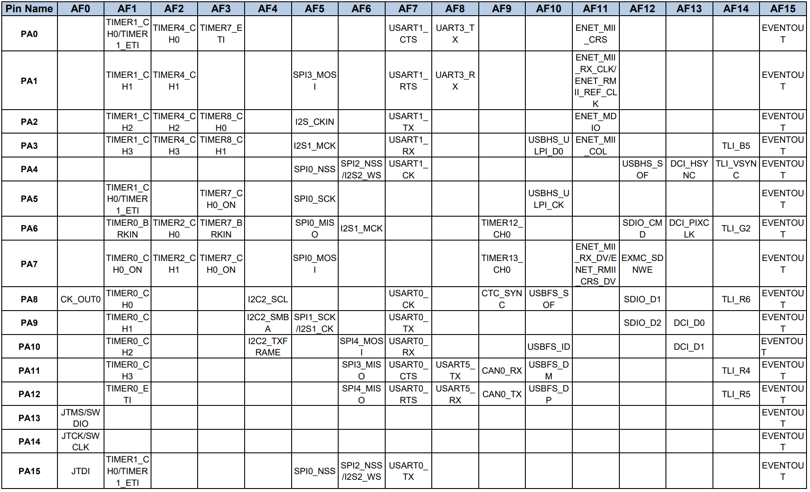
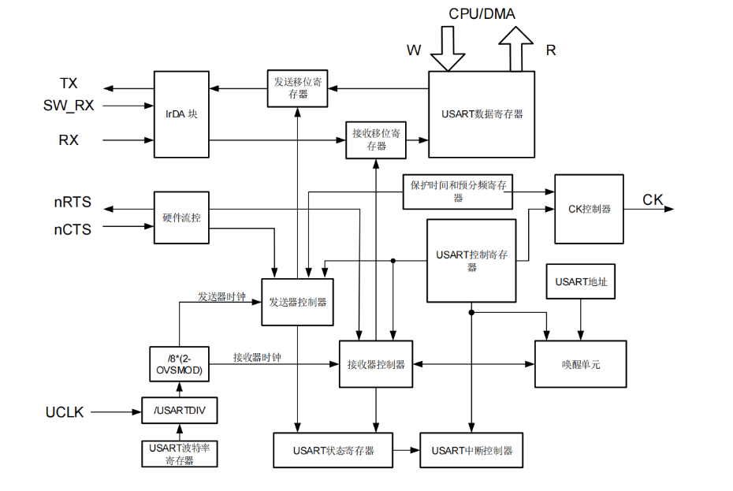
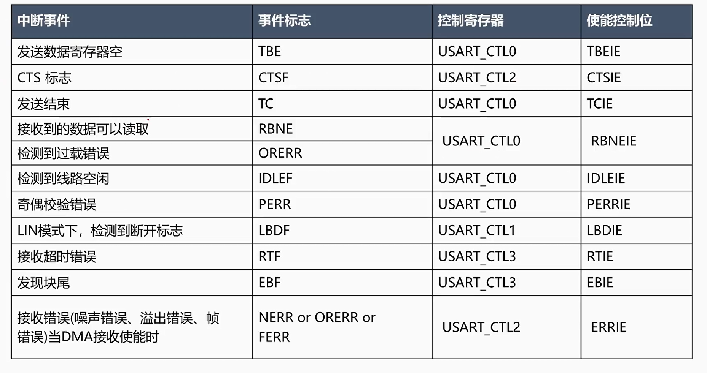
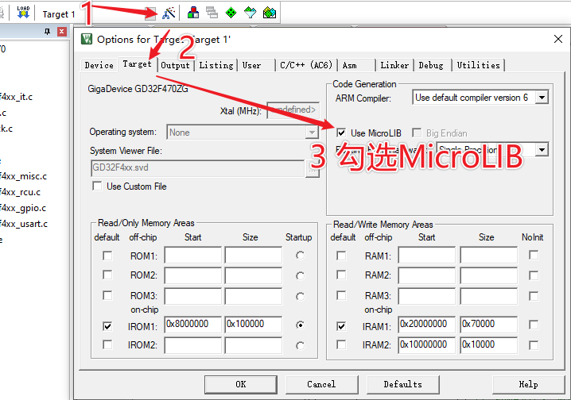

<!DOCTYPE lake>
<h2 data-lake-id="V4WAW" id="V4WAW"><span data-lake-id="ue3dda281" id="ue3dda281">学习目标</span></h2><ol list="uad436c56"><li data-lake-id="u7dc406a5" fid="uf7a26fd1" id="u7dc406a5"><span data-lake-id="uc535073d" id="uc535073d">掌握串口初始化流程</span></li><li data-lake-id="u041e188b" fid="uf7a26fd1" id="u041e188b"><span data-lake-id="u63dc0250" id="u63dc0250">掌握串口输出单个字符</span></li><li data-lake-id="u4b40686f" fid="uf7a26fd1" id="u4b40686f"><span data-lake-id="u36568a5a" id="u36568a5a">掌握串口输出字符串</span></li><li data-lake-id="ua33c9e18" fid="uf7a26fd1" id="ua33c9e18"><span data-lake-id="u8b7d2134" id="u8b7d2134">掌握通过串口printf</span></li><li data-lake-id="ud68befb7" fid="uf7a26fd1" id="ud68befb7"><span data-lake-id="u02c35737" id="u02c35737">熟练掌握串口开发流程</span></li></ol><h2 data-lake-id="rIbds" id="rIbds"><span data-lake-id="u667335e0" id="u667335e0">学习内容</span></h2><h3 data-lake-id="Cpbkz" id="Cpbkz"><span data-lake-id="ua6e2a736" id="ua6e2a736">需求</span></h3><p data-lake-id="ub6d48551" id="ub6d48551"></p><p data-lake-id="uf3c8258d" id="uf3c8258d"><span data-lake-id="uce3fd20b" id="uce3fd20b">串口循环输出内容到PC机。</span></p><h3 data-lake-id="c1pHh" id="c1pHh"><span data-lake-id="ucbba10dd" id="ucbba10dd">串口数据发送</span></h3><p data-lake-id="u1e643624" id="u1e643624"><span data-lake-id="uf3ba1d3c" id="uf3ba1d3c">添加Usart功能。</span></p><p data-lake-id="ub6b15871" id="ub6b15871"><span data-lake-id="u0bb5d22b" id="u0bb5d22b">首先，选中Firmware，鼠标右键，点击</span><code data-lake-id="u8b61b2ed" id="u8b61b2ed"><span data-lake-id="ue07bc074" id="ue07bc074">Manage Project Items</span></code></p><p data-lake-id="u4ac98042" id="u4ac98042"></p><p data-lake-id="ud1b6ae64" id="ud1b6ae64"><span data-lake-id="ubcdfdaa9" id="ubcdfdaa9">接着，将</span><code data-lake-id="u481f0e6b" id="u481f0e6b"><span data-lake-id="ud85f6187" id="ud85f6187">gd32f4xx_usart.c</span></code><span data-lake-id="u7d829e14" id="u7d829e14">添加到依赖中</span></p><p data-lake-id="u2fdb2acc" id="u2fdb2acc"></p><p data-lake-id="u84c465a4" id="u84c465a4"><span data-lake-id="u051d808c" id="u051d808c">最后，观察</span><code data-lake-id="u8e8b0665" id="u8e8b0665"><span data-lake-id="u240eeebd" id="u240eeebd">Firmware</span></code></p><p data-lake-id="ue74f1bf7" id="ue74f1bf7"></p><span class="yuque-card-unsupported">[codeblock]</span><span class="yuque-card-unsupported">[codeblock]</span><span class="yuque-card-unsupported">[codeblock]</span><h3 data-lake-id="ehnqf" id="ehnqf"><span data-lake-id="u30273f69" id="u30273f69">串口打印实现</span></h3><span class="yuque-card-unsupported">[codeblock]</span><h3 data-lake-id="E1jsl" id="E1jsl"><span data-lake-id="u61546fee" id="u61546fee">复用功能</span></h3><p data-lake-id="uae1a9f53" id="uae1a9f53"></p><p data-lake-id="u8b13f2de" id="u8b13f2de"><span data-lake-id="u8dd661be" id="u8dd661be">串口为</span><code data-lake-id="uf4514ed6" id="uf4514ed6"><span data-lake-id="u3d0af2ff" id="u3d0af2ff">PA9</span></code><span data-lake-id="ud53bb2fc" id="ud53bb2fc">和</span><code data-lake-id="u8ae553e7" id="u8ae553e7"><span data-lake-id="u3cefbcb1" id="u3cefbcb1">PA10</span></code><span data-lake-id="ub6d1493f" id="ub6d1493f">，通过文档查询复用功能。</span></p><h3 data-lake-id="cmZdG" id="cmZdG"><span data-lake-id="u62dc6b31" id="u62dc6b31">串口发送流程（了解）</span></h3><p data-lake-id="u3d5e3515" id="u3d5e3515"></p><p data-lake-id="u7f994c03" id="u7f994c03"><span data-lake-id="u90089b33" id="u90089b33">寄存器与电路。</span></p><ol list="u328dfa93"><li data-lake-id="ua1e0d295" fid="ue8471711" id="ua1e0d295"><span data-lake-id="u5f361484" id="u5f361484">数据发送缓存寄存器</span></li><li data-lake-id="u7a3a09cb" fid="ue8471711" id="u7a3a09cb"><span data-lake-id="u0c6b4bd0" id="u0c6b4bd0">状态寄存器</span></li></ol><p data-lake-id="u00db0a5e" id="u00db0a5e"><span data-lake-id="ud738fd01" id="ud738fd01">数据发送的流程，就是向发送缓冲区里放数据，这个发送缓存区寄存器只有有数据，就会触发电路，电路就按照这个数据模拟出高低电平往外发数据。</span></p><p data-lake-id="ub61f5c06" id="ub61f5c06"><span data-lake-id="u8f3ad385" id="u8f3ad385">发送缓存区寄存器有个特点，小，只有一个byte，但是超快，寄存器在芯片内部寸土寸金。</span></p><p data-lake-id="u9a199807" id="u9a199807"><span data-lake-id="ud78318f4" id="ud78318f4">存在一个问题，如果发送大量数据，这个寄存器的数据还没发送完成，会覆盖掉，这时候有一个状态寄存器记录了当前发送缓冲去是否是闲置的。（GD32是</span><code data-lake-id="u24179a3b" id="u24179a3b"><span data-lake-id="uecd41422" id="uecd41422">USART_FLAG_TBE</span></code><span data-lake-id="uf7dddc86" id="uf7dddc86">,STM32是</span><code data-lake-id="u30acc270" id="u30acc270"><span data-lake-id="ub9b68ff2" id="ub9b68ff2">UART_FLAG_TXE</span></code><span data-lake-id="ue9bcbe45" id="ue9bcbe45">）</span></p><p data-lake-id="uf2d6a298" id="uf2d6a298"><span data-lake-id="ud29c00b4" id="ud29c00b4">​</span><br/></p><h3 data-lake-id="jvIia" id="jvIia"><span data-lake-id="u0df932db" id="u0df932db">串口的标志位</span></h3><p data-lake-id="uc3024c2e" id="uc3024c2e"></p><p data-lake-id="ufab3315e" id="ufab3315e"><br/></p><h3 data-lake-id="YELZW" id="YELZW"><span data-lake-id="u7d7ed3ee" id="u7d7ed3ee">关心的内容</span></h3><p data-lake-id="u1792e6ae" id="u1792e6ae"><span data-lake-id="u5a99b4a5" id="u5a99b4a5">将代码进行抽取</span></p><span class="yuque-card-unsupported">[codeblock]</span><p data-lake-id="ubf94e941" id="ubf94e941"><span data-lake-id="u6db06d64" id="u6db06d64">总结起来：</span></p><ol list="ue8dc379f"><li data-lake-id="u7a57d544" fid="udc893062" id="u7a57d544"><span data-lake-id="u67d8c9c8" id="u67d8c9c8">GPIO引脚配置</span></li></ol><span class="yuque-card-unsupported">[codeblock]</span><ul data-lake-indent="1" list="u1831cf48"><li data-lake-id="uc9d6218a" fid="u5e2d4861" id="uc9d6218a"><strong><span data-lake-id="ub8dab3a2" id="ub8dab3a2">哪个引脚</span></strong></li><li data-lake-id="u069098bb" fid="u5e2d4861" id="u069098bb"><strong><span data-lake-id="ud4cacab6" id="ud4cacab6">复用端口是哪个</span></strong></li></ul><ol list="u75c9b2b9" start="2"><li data-lake-id="u41bd5725" fid="ub93be888" id="u41bd5725"><span data-lake-id="u4ef48543" id="u4ef48543">串口配置</span></li></ol><span class="yuque-card-unsupported">[codeblock]</span><ul data-lake-indent="1" list="u55f5ac8a"><li data-lake-id="ub288e582" fid="u614b9852" id="ub288e582"><strong><span data-lake-id="u3acbfe57" id="u3acbfe57">哪个串口</span></strong></li><li data-lake-id="u5560cab2" fid="u614b9852" id="u5560cab2"><strong><span data-lake-id="u60e6466d" id="u60e6466d">波特率是多少。（剩余的基本百年不变）</span></strong></li></ul><h3 data-lake-id="K29pC" id="K29pC"><span data-lake-id="ub625d792" id="ub625d792">完整示例</span></h3><span class="yuque-card-unsupported">[codeblock]</span><p data-lake-id="u1d000c2d" id="u1d000c2d"><br/></p><p data-lake-id="udc3c0173" id="udc3c0173"><strong><span data-lake-id="uf6ad90ef" id="uf6ad90ef">如果按照如上代码配置还是不能输出日志，则需要勾选MicroLIB</span></strong></p><p data-lake-id="u183ea424" id="u183ea424"></p><h2 data-lake-id="JC952" id="JC952"><span data-lake-id="u5901e6e2" id="u5901e6e2">练习题</span></h2><ol list="u35a85e4a"><li data-lake-id="u9806f981" fid="ued689890" id="u9806f981"><span data-lake-id="u28a442d2" id="u28a442d2">实现串口数据发送</span></li><li data-lake-id="u1186cf4c" fid="ued689890" id="u1186cf4c"><span data-lake-id="u878bfd35" id="u878bfd35">创建属于自己的串口发送模板代码</span></li></ol><p data-lake-id="u12c280ef" id="u12c280ef"><br/></p>